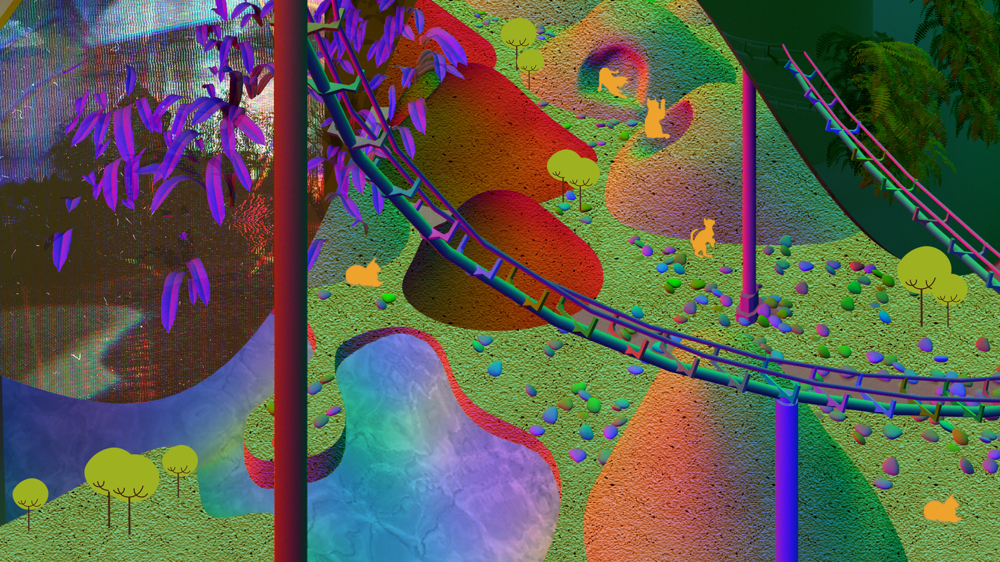

About Me
I am an architect and a designer, engaging in a design-related field. I used to design more architecture works, from large projects such as museum design to small projects such as house and kindergarten design. In addition to traditional architecture design, I am currently studying computational design. I enjoy travel, manga, photography and reading, and I believe that architects have a responsibility to change the society. Through design I hope to express our social structure, human relationships, and to promote social changes. To see more please click on the link below the image to view my full portfolio or you can contact me through the contact way listed below.
